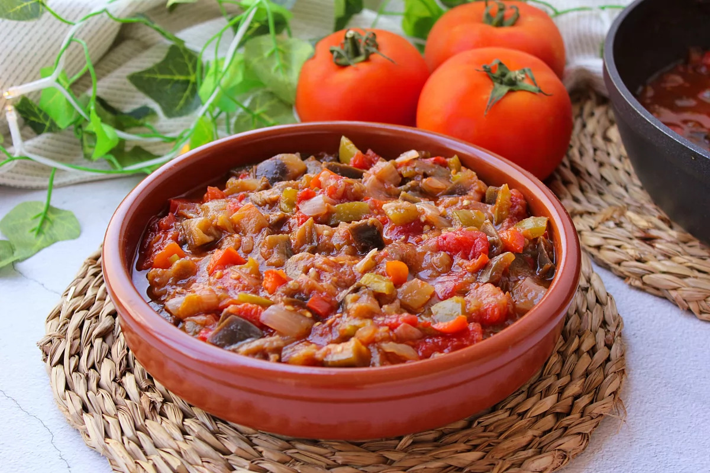
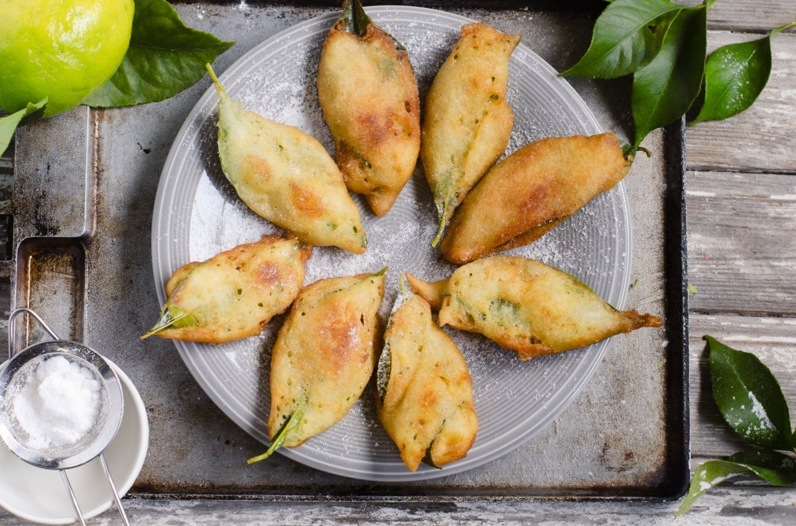

Pisto
Elaboración tradicional basada en productos de la huerta murciana.
El Pisto Murciano está estrechamente relacionado con los productos de la huerta y forma parte de la cocina tradicional de la Región de Murcia.
Descubrir el platoGastronomía de la Región
Descubre algunos de los platos y productos más representativos de la gastronomía murciana.

Elaboración tradicional basada en productos de la huerta murciana.
El Pisto Murciano está estrechamente relacionado con los productos de la huerta y forma parte de la cocina tradicional de la Región de Murcia.
Descubrir el plato
Uno de los platos tradicionales más representativos de la cocina murciana.
Los Paparajotes se elaboran con hojas de limonero, pero la hoja no se come. Es uno de los dulces más característicos de la gastronomía murciana.
Descubrir el plato